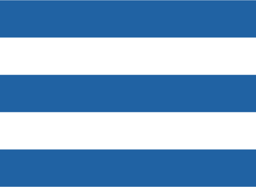

<div class="admin-container">
    <mat-drawer-container>
        <mat-drawer class="displayNoneTel sideMenu" mode="side" opened>

            <div class="sideMenu--item">
                
            </div>

            <div class="sideMenu--item">
                <button mat-icon-button routerLinkActive="activeLink" [routerLink]="['/admin','dashboardAdmin']"
                    matTooltip="Dashboard" matTooltipPosition="right">
                    <mat-icon>dashboard</mat-icon>
                </button>
            </div>

            <div class="sideMenu--item">
                <button mat-icon-button routerLinkActive="activeLink" class="navbar-button" matTooltip="Employees"
                    matTooltipPosition="right" [routerLink]="['/admin','stafflist']">
                    <mat-icon>perm_contact_calendar</mat-icon>
                </button>
            </div>

            <div class="sideMenu--item">
                <button mat-icon-button routerLinkActive="activeLink" class="navbar-button" matTooltip="Events"
                    matTooltipPosition="right" [routerLink]="['/admin','calendar']">
                    <mat-icon>card_travel</mat-icon>
                </button>
            </div>

            <div class="sideMenu--item">
                <button mat-icon-button routerLinkActive="activeLink" class="navbar-button" matTooltip="Log Time"
                    matTooltipPosition="right" [routerLink]="['/admin','logTime']">
                    <mat-icon>access_time</mat-icon>
                </button>
            </div>

            <div class="sideMenu--item">
                <button mat-icon-button routerLinkActive="activeLink" class="navbar-button" matTooltip="Setting"
                    matTooltipPosition="right" [routerLink]="['/admin','setting']">
                    <mat-icon>settings</mat-icon>
                </button>
            </div>

            <div class="sideMenu--item">
                <button mat-icon-button routerLinkActive="activeLink" class="navbar-button" matTooltip="Requests"
                    matTooltipPosition="right" [routerLink]="['/admin','messageAdmin']">
                    <mat-icon>message</mat-icon>
                    <span *ngIf='requestCount' class="circle-sms">{{requestCount}}</span>
                </button>
            </div>
            
            <div class="sideMenu--item">
                <button (click)="logout()" mat-icon-button matTooltip="Logout" matTooltipPosition="right">
                    <mat-icon>exit_to_app</mat-icon>
                </button>
            </div>

        </mat-drawer>
        <mat-drawer-content>
            <div class="menu displayNoneBtnSheet">
                <button class="menuTel" (click)="openBottomSheet()">
                    
                </button>
            </div>
            <router-outlet></router-outlet>
        </mat-drawer-content>
    </mat-drawer-container>
</div>